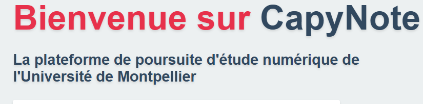

CapyNote
Oct 2023 – Jan 2024
Équipe de 4
Gestion des Poursuites d'Études
PHP/MySQL
Description
CapyNote est une application web de gestion des dossiers de poursuite d'études développée
pour simplifier
le suivi administratif des étudiants en fin de cursus. L'application permet aux étudiants de
soumettre
leurs candidatures, aux responsables de les traiter et de générer des rapports de suivi.
Le projet a été réalisé en équipe de 4 sur 3 mois avec une méthodologie agile.
Technologies utilisées
PHP 8.2
MySQL
HTML5 / CSS3
JavaScript
TailwindCSS
Docker
Fonctionnalités clés
📋 Gestion des Dossiers
Soumission, suivi et validation des candidatures
👤 Multi-Rôles
Étudiants, responsables, administrateurs
📊 Tableaux de Bord
Visualisation des statistiques et états
🐳 Docker
Environnement conteneurisé pour le déploiement